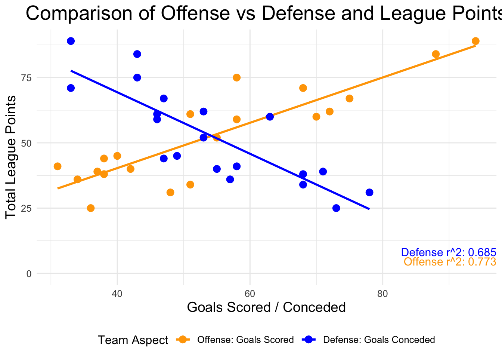
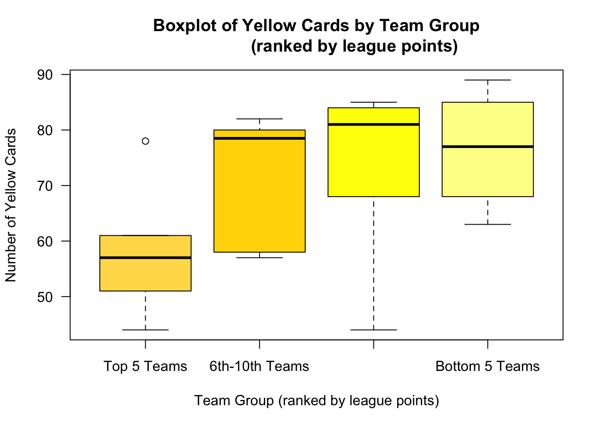
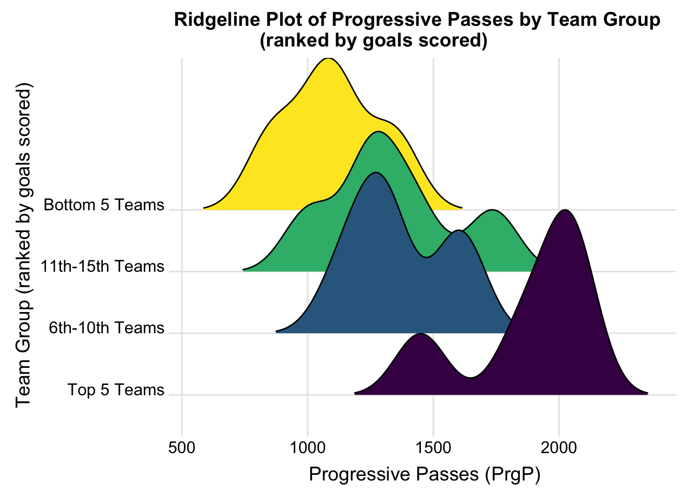
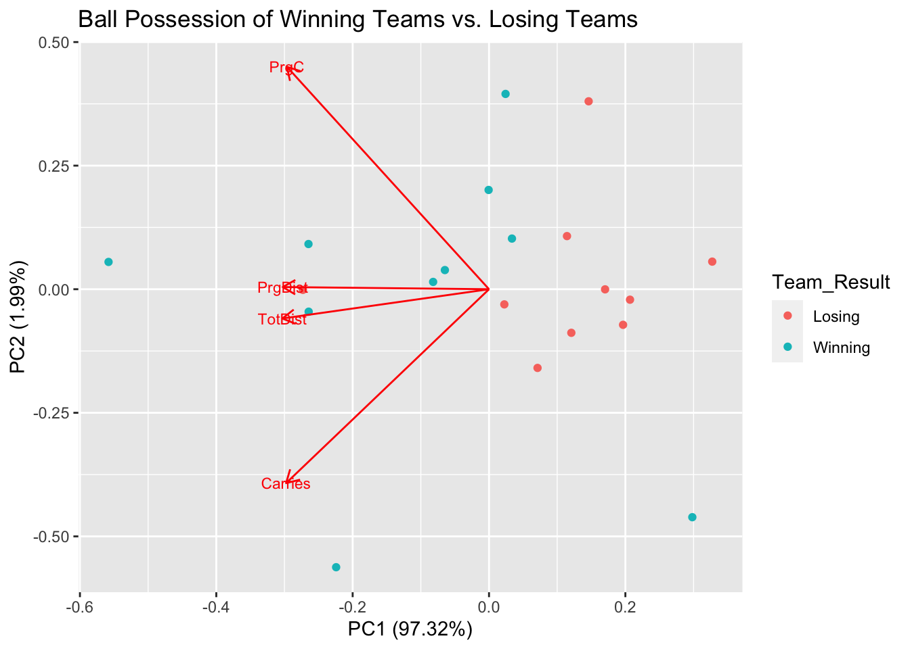
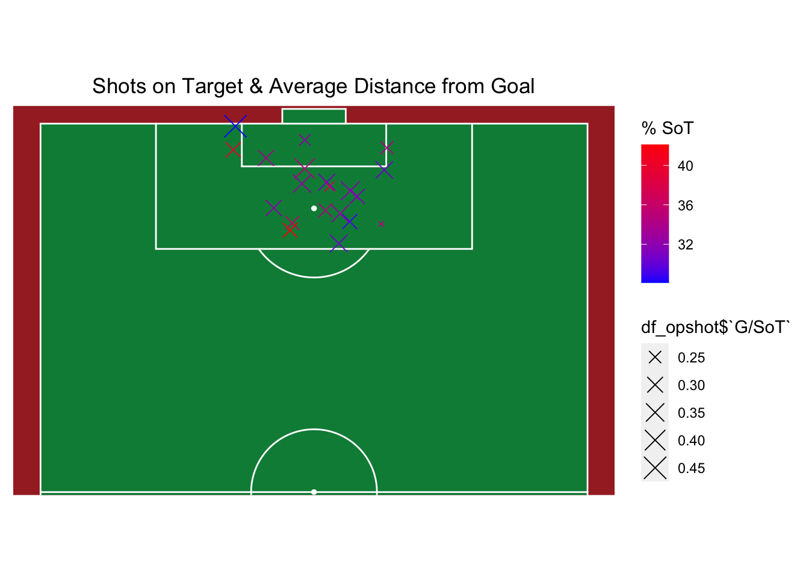
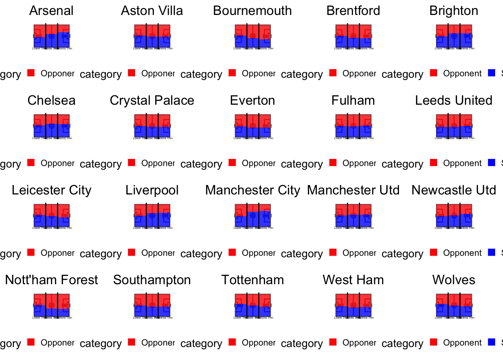
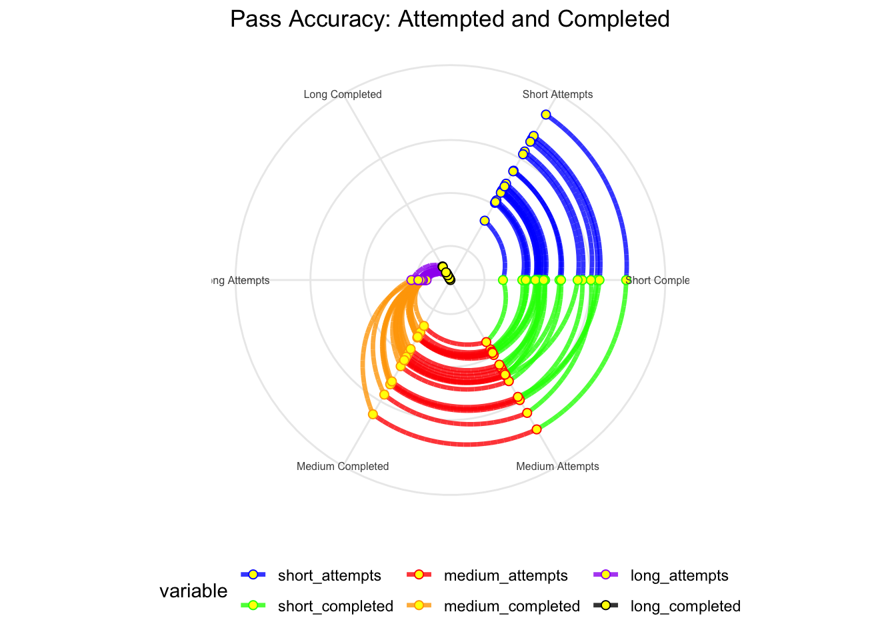
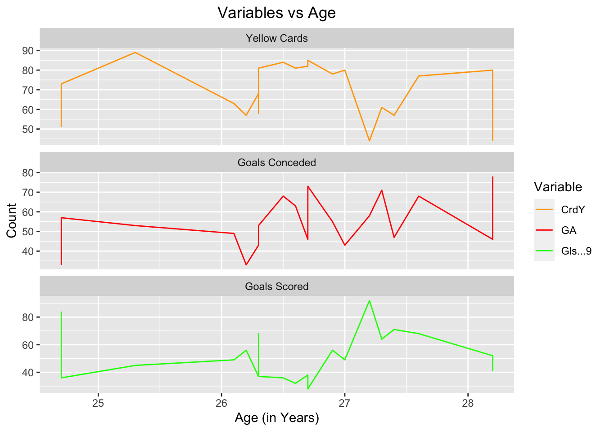
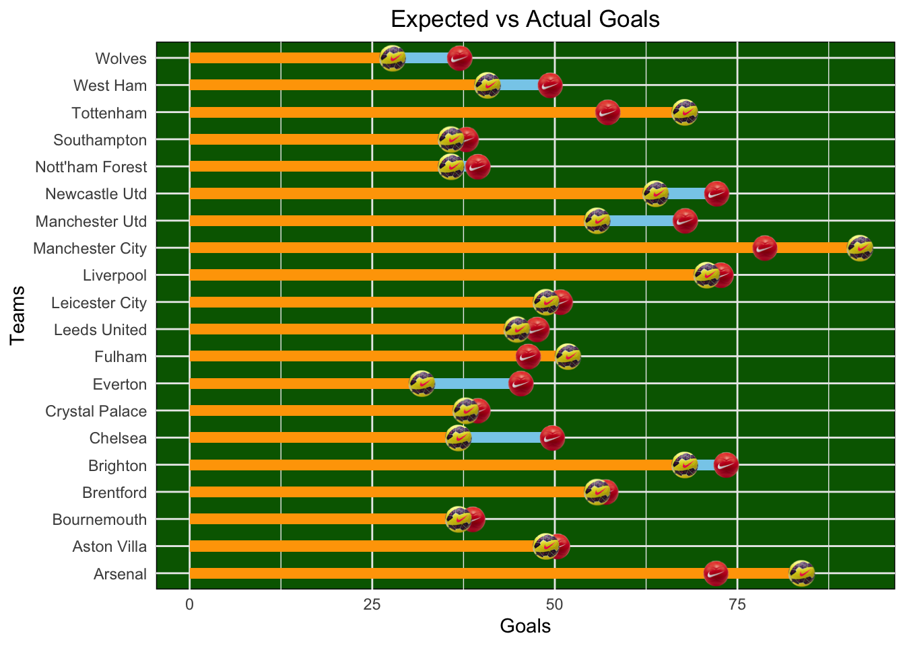

# read datareg_data <-read.csv('data/regular.csv')# compute r^2 for goals scored and conceded vs. total pointscor_gf <-cor(reg_data$GF, reg_data$Pts)^2cor_ga <-cor(reg_data$GA, reg_data$Pts)^2# Visual 1: create scatter plotp <-ggplot() +geom_point(data=reg_data, aes(x=GF, y=Pts, color="Defense"), size=3) +geom_smooth(data=reg_data, aes(x=GF, y=Pts, color="Defense"), method="lm", se=FALSE) +geom_point(data=reg_data, aes(x=GA, y=Pts, color="Offense"), size=3) +geom_smooth(data=reg_data, aes(x=GA, y=Pts, color="Offense"), method="lm", se=FALSE) +ggtitle("Comparison of Offense vs Defense and League Points") +xlab("Goals Scored / Conceded") +ylab("Total League Points") +scale_color_manual(values=c("Offense"="blue", "Defense"="orange"),name="Team Aspect",labels=c("Offense: Goals Scored", "Defense: Goals Conceded")) +theme_minimal() +theme(text =element_text(size=12),plot.title =element_text(hjust =0.5, size=20),axis.title =element_text(size=14),legend.position ="bottom") +annotate("text", x=Inf, y=0, hjust=1, vjust=-1,label=paste("Offense r^2:", round(cor_gf, 3)),color="orange", size=4) +annotate("text", x=Inf, y=2, hjust=1, vjust=-1.5,label=paste("Defense r^2:", round(cor_ga, 3)),color="blue", size=4)# show plotprint(p)
`geom_smooth()` using formula = 'y ~ x'
`geom_smooth()` using formula = 'y ~ x'

Comments:
Points are a measure of how well a team did during the season (3 points for a win, 1 point for a draw, and 0 points for a loss). We decided to explore the relationship between points and goals scored (by a squad and against a squad). Each squad has two dots on the plot; a red dot indicating goals scored (offense) and a blue dot indicating goals conceded (defense). Both are certainly correlated with better/worse league performance (points), but we do observe a stronger correlation of points and goals scored; suggesting that offense could be more important for success in the league!
3.2 “Keep your Composure” (Boxplot)
Code
# load more data and fix format of itstd_stats_data <-read.csv('data/Squad Standard Stats.csv')names(std_stats_data) <-as.character(unlist(std_stats_data[1, ]))std_stats_data <- std_stats_data[-1, ]std_stats_data <-data.frame(Squad = std_stats_data$Squad, CrdY = std_stats_data$CrdY)# join to get the total points in our new tabledf2_pts <-select(reg_data, Squad, Pts)joined_df <-left_join(std_stats_data, df2_pts, by ="Squad")joined_df_grouped <- joined_df %>%arrange(desc(Pts)) %>%mutate(Group =cut(row_number(),breaks=c(0, 5, 11, 16, 21),labels=c('Top 5 Teams', '6th-10th Teams','11th-15th Teams', 'Bottom 5 Teams'),include.lowest=TRUE))joined_df_grouped$CrdY <-as.numeric(as.character(joined_df_grouped$CrdY))# Visual 2: create the box plotboxplot(CrdY ~ Group, data = joined_df_grouped,main ="Boxplot of Yellow Cards by Team Group (ranked by league points)",xlab ="Team Group (ranked by league points)",ylab ="Number of Yellow Cards",col =c("#FFDB58", "#FFD700", "yellow", "#FDFD96"),las =1)

Comments:
A yellow card is a penalty given to a team by referees when a player breaks the rules in some way. This box plot shows the distribution of the number of yellow cards, by team groups (ranked by total league points). We split the 20 total teams into the top 5 best teams, 2nd 5 best, 3rd 5 best, and worst 5 teams. Then we see how they compare based on the number of yellow cards. We can see that there is a clear relationship between fewer yellow card penalties and better league performance. This suggests that maybe keeping it cool and staying composed can actually help a team succeed.
3.3 “Sharing is Caring” (Ridgeline Plot)
Code
# reload and process datastd_stats_data <-read.csv('data/Squad Standard Stats.csv')names(std_stats_data) <-as.character(unlist(std_stats_data[1, ]))std_stats_data <- std_stats_data[-1, ]std_stats_data <-data.frame(Squad = std_stats_data$Squad,PrgP = std_stats_data$PrgP, Gls = std_stats_data$Gls)std_stats_data$Gls <-as.numeric(as.character(std_stats_data$Gls))std_stats_data$PrgP <-as.numeric(as.character(std_stats_data$PrgP))df_grouped <- std_stats_data %>%arrange(desc(Gls)) %>%mutate(Group =cut(row_number(),breaks=c(0, 5, 11, 16, 21),labels=c('Top 5 Teams', '6th-10th Teams','11th-15th Teams', 'Bottom 5 Teams'),include.lowest=TRUE))# Visual 3: ridgeline plotp <-ggplot(df_grouped, aes(x = PrgP, y = Group)) +geom_density_ridges(aes(fill = Group), scale =3, rel_min_height =0.01) +scale_fill_viridis_d() +labs(title ="Ridgeline Plot of Progressive Passes by Team Group (ranked by goals scored)",x ="Progressive Passes (PrgP)",y ="Team Group (ranked by goals scored)") +theme_ridges() +theme(legend.position ="none",axis.title.x =element_text(hjust =0.5),axis.title.y =element_text(hjust =0.5))# Print the plotprint(p)
Picking joint bandwidth of 100

Comments:
Do teams who pass the ball more often score more goals? To answer this we explored the relationship between total goals scored and the number of progressive passes throughout the season. We ranked the teams by number of goals scored and then grouped them into top 5, 5th-10th, 11th-15th, and bottom 5 teams. Then we plotted the density curve of the number of passes for each group/subset. We found that there is clearly a correlation between more passes/ball movement and more goals scored. While players may want the attention of scoring a goal themselves, it may be in the best interest of the team to pass the ball and share the spotlight with one another.
Goalies play a pivotal role in a team’s success, so we decided to explore how certain goalie statistics were related to winning. Specifically, we explored clean sheet percentage (cs_percent) defined as the % of games the goalie allowed zero goals by the opponent, save percentage (save_percent) defined as the percentage of shots that were blocked by the goalie, and penalty kick save percentage (pk_save_percent) defined as the percentage of penalty kicks that were blocked by the goalie. We grouped the goalies into 4 groups ranked by their win percentage (i.e. games won divided by total games in the season) and used these groups to color code the lines in our plot. We see that the save_percent was not strongly correlated with goalies that win a lot; however, our other two metrics pk_save_percent and cs_percent are both highest for goalies that had high winning percentage and lowest for goalies that lost many matches. Thus, this displays the key role goalies play in a team’s success.
3.5 “Hold for the Gold” (Biplot)
Code
# load possession dataposs_data <-read.csv('data/Squad Possession.csv')names(poss_data) <-as.character(unlist(poss_data[1, ]))poss_data <- poss_data[-1, ]poss_data$Carries <-as.numeric(as.character(poss_data$Carries))poss_data$TotDist <-as.numeric(as.character(poss_data$TotDist))poss_data$PrgDist <-as.numeric(as.character(poss_data$PrgDist))poss_data$PrgC <-as.numeric(as.character(poss_data$PrgC))df2_pts <-select(reg_data, Squad, Pts)joined_df <-left_join(poss_data, df2_pts, by ="Squad")joined_df <- joined_df %>%mutate(Team_Result =ifelse(Pts >median(Pts), "Winning", "Losing"))# Run PCA on the selected metricsselected_metrics <- joined_df %>%select(Carries, TotDist, PrgDist, PrgC)pca_result <-prcomp(selected_metrics, scale. =TRUE)# Create a dataframe for the PCA scores with winning/losing team infoscores_df <-data.frame(pca_result$x, Team_Result = joined_df$Team_Result)# Visual 5: biplotp <-autoplot(pca_result, data = scores_df, colour ='Team_Result', loadings =TRUE, loadings.label =TRUE, loadings.label.size =3)p <- p +ggtitle("Ball Possession of Winning Teams vs. Losing Teams")print(p)

Comments:
Maintaining control/possession of the ball is an important element in being a successful soccer team. In this plot we explore the relationship between winning games and various possession metrics including: Total distance (total distance traveled with ball), progressive distance (total forward distance traveled with ball), total carries (number of times a player controls the ball), and progressive carries (number of times a player controls the ball and moves forward). We see from our biplot that all of these metrics are associated with more winning teams than losing teams, proving that indeed maintaining possession and holding the ball in control help teams reach success.
Rows: 20 Columns: 20
── Column specification ────────────────────────────────────────────────────────
Delimiter: ","
chr (1): Squad
dbl (19): # Pl, 90s, Gls, Sh, SoT, SoT%, Sh/90, SoT/90, G/Sh, G/SoT, Dist, F...
ℹ Use `spec()` to retrieve the full column specification for this data.
ℹ Specify the column types or set `show_col_types = FALSE` to quiet this message.
Code
set.seed(123) avg_distances <- df_opshot$Dist generate_shot_coordinates <-function(avg_distances, num_samples =20) { angle <- (runif(num_samples, 0, 2* pi)) distance <-sqrt(runif(num_samples, 0, 1)) * avg_distances x <-100- distance *abs(cos(angle)) y <-50+ distance *sin(angle)return(data.frame(x = x, y = y))}coordinates <-generate_shot_coordinates(avg_distances, num_samples =20)coordinates$Squad <- df_opshot$Squad#half pitch plot <-ggplot() +annotate_pitch(colour ="white",fill ="springgreen4",limits =FALSE) +geom_point(aes(x=coordinates$x,y=coordinates$y,color = df_opshot$`SoT%`, text =paste0("Squad: ", coordinates$Squad,"\nGoals per SoT: ", df_opshot$`G/SoT`),size=df_opshot$`G/SoT`), shape =4)+scale_color_gradient(low ="blue", high ="red", name ="% SoT") +theme_pitch() +theme(panel.background =element_rect(fill ="brown")) +coord_flip(xlim =c(52, 100)) +scale_y_reverse() +labs(#Thats a long shot, brotitle ="Shots on Target & Average Distance from Goal",color ="SoT" ) +theme(plot.title =element_text(hjust =0.5))plot

Comments:
The Visualisation was drawn using the following steps: 1. Using the ggsoccer library, we drew one half of pitch (since this was the area of interest). 2. In the ‘Opponent Shooting Stats’ sheet of the data, there was a column for the average shot distance for all shots taken against all teams. 3. Keeping the value of this distance the same, we generated random (x,y) coordinates so that they could be plotted on the pitch with the centre of the goal kept at the centre. 4. ‘Color’ attribute was added to the ‘SoT’ (Shots on Target) variable indicating shot accuracy. On a similar note, the size variable was attributed to the G/SoT variable.
Graph Components: Pitch Visualization: Half-pitch representation focusing on the area of interest, depicting the goal's center. 'X' Marks on the Pitch: Represent shot locations against different teams. Color Attribute (Red Tones): Indicates shot accuracy (%SoT) against teams, brighter red for higher accuracy. Size of 'X' Marks: Represents Goals per Shot on Target (G/SoT) against teams. Larger 'X' marks indicate a higher number of goals per shot on target. Inferences:
Distance vs. Shot Accuracy: There isn't a consistent negative correlation between shot distance and the percentage of shots on target. For example, teams facing Liverpool took shots from a considerable distance, yet the %SoT remains relatively high.
Shots on Target vs. Actual Goals: Merely having shots on target doesn't guarantee scoring. This is evident from the smaller 'X' mark size against Liverpool, suggesting lower conversion rates of shots into actual goals.
Defense Impact: Teams facing opponents who take shots from a distance indicate a strong defense strategy. These opponents are forced into taking distant shots, implying the defense doesn't allow close-range opportunities.
Key Insights: Defensive Strategy: A robust defense that prevents opponents from getting close to the goal might result in shots taken from a distance. While this doesn't necessarily lead to off-target shots, it does increase the chances of easier saves for an experienced goalkeeper. Shot Conversion Complexity: A high percentage of shots on target doesn't guarantee higher goal conversion. Quality shot placement and finishing skill are crucial for turning shots on target into actual goals. Balance Needed: Balancing defensive resilience to deter close-range shots with effective attack strategies to improve shot quality and conversion rates is vital for team success.
Conclusion: The analysis suggests that while keeping opponents at a distance from the goal may result in distant shots, it doesn't guarantee lower shot accuracy. The focus should be on maintaining a strong defense to limit close-range opportunities while improving offensive strategies for higher-quality shots and better conversion rates. Achieving this balance is critical for a team's performance and success.
3.7 “Good Touch, Bad Touch.” (Stacked Bar Plot)
Code
# Create a soccer pitchpitch <-ggplot() +annotate_pitch() +theme_pitch() +theme(axis.title =element_blank())df_pos <-read_excel("data/EPL (Names).xlsx", sheet ="Squad Possession", skip=1)df_oppos <-read_excel("data/EPL (Names).xlsx", sheet ="Opponent Possession", skip=1)values <-data.frame(category =c('Squad','Opponent'),team =c(rbind(df_pos$Squad, df_oppos$Squad)),def_third =c(rbind(df_pos$`Def 3rd`, df_oppos$`Def 3rd`)),mid_third =c(rbind(df_pos$`Mid 3rd`, df_oppos$`Mid 3rd`)),att_third =c(rbind(df_pos$`Att 3rd`, df_oppos$`Att 3rd`)))# Calculate percentages for stacked barfor (i inseq(1, nrow(values), by =2)) { values$def_Percentage[i] <- (values$def_third[i] / (values$def_third[i] + values$def_third[i +1])) *100 values$def_Percentage[i +1] <- (values$def_third[i +1] / (values$def_third[i] + values$def_third[i +1])) *100 values$mid_Percentage[i] <- (values$mid_third[i] / (values$mid_third[i] + values$mid_third[i +1])) *100 values$mid_Percentage[i +1] <- (values$mid_third[i +1] / (values$mid_third[i] + values$mid_third[i +1])) *100 values$att_Percentage[i] <- (values$att_third[i] / (values$att_third[i] + values$att_third[i +1])) *100 values$att_Percentage[i +1] <- (values$att_third[i +1] / (values$att_third[i] + values$att_third[i +1])) *100}#Combined Plot for 20 Teamsplots_list <-list()j=1for (i inseq(1, nrow(values), by =2)) { start_row <- i end_row <- i+1# Subset the data for each graph subset_data <- values[start_row:end_row, ] plot <- pitch +#lower thirdgeom_bar(data = subset_data, aes(y = def_Percentage, x =16.5, fill = category), stat ="identity", position ="stack", alpha =0.8, width =33) +geom_text(aes(x =16.5, y =-5, label ="Lower Third"), color ="black", size =1) +#mid-thirdgeom_bar(data = subset_data, aes(y = mid_Percentage, x =50, fill = category), stat ="identity", position ="stack", alpha =0.8, width =34) +geom_text(aes(x =50, y =-5, label ="Middle Third"), color ="black", size =1) +#attacking-thirdgeom_bar(data = subset_data, aes(y = att_Percentage, x =83.5, fill = category), stat ="identity", position ="stack", alpha =0.8, width =33) +geom_text(aes(x =83.5, y =-5, label ="Attacking Third"), color ="black", size =1) +scale_fill_manual(values =c("Squad"="blue", "Opponent"="red")) +theme(legend.position ="bottom",plot.title=element_text(hjust=0.5), legend.key.size =unit(0.30, "cm"))+geom_vline(xintercept =33, linetype ="solid", color ="black") +geom_vline(xintercept =67, linetype ="solid", color ="black") +ggtitle(paste(subset_data$team[1])) plots_list[[j]] <- plot#ggsave(filename = paste0("graph_", i, ".png")) j<- j+1}grid.arrange(grobs = plots_list, ncol =5, widths =rep(5, 5), heights =rep(4, 4))

Comments:
Visualization Components: Divided Thirds: Three distinct sections representing different thirds of the pitch—defensive, midfield, and attacking. Color Gradient (Blue Tones): Indicates team control and dominance in each third of the pitch. More blue signifies better control over that area. Comparison between Squad and Opponent Touches: The comparison between a team's touches and those of its opponents in each third. Inferences:
Team's Control and Playing Style: The dominance of blue hues in each third signifies the team's control over specific areas. More touches in the attacking half suggest an aggressive playing style, while conceding touches in the defensive half implies a more conservative approach.
Observations: o Balanced Touches: Initially, there appears to be a balance between a team's and its opponent's touches in each third, with no clear trends. o Domination by Select Teams: Manchester City, Arsenal, Chelsea, and Brighton showcase dominance across the entire pitch, indicating their slow and intricate, possession-based style. o Poor Ball Retention: Teams like Nottingham Forest, West Ham, and Bournemouth show inadequate ball retention across all thirds, signifying a lack of control over the ball. o Liverpool's Contrasting Pattern: Liverpool stands out with opponents having more touches in their defense, yet they dominate the middle and attacking thirds. This may be attributed to their high-press strategy and direct approach to scoring.
Correlation with Results: o Effectiveness of Ball Retention: More blue hues generally correlate with better results. Teams like Everton, West Ham, and Wolves with lower touch values finished in the bottom half. o Goals vs. Possession: Notably, possessing more doesn't necessarily result in more goals. Chelsea, despite showing dominance, finished lower in the league, emphasizing Jose Mourinho's quote: "They can take the ball home. I’ll take the three points."
Conclusion: Control and Strategy: The distribution of touches across different thirds reflects a team's playing style - whether aggressive or conservative. Performance vs. Possession: While possession is crucial, its correlation with positive outcomes varies. Effective ball retention in critical thirds contributes to success, but goals and results don't always align with possession dominance. Varied Approaches: Different teams showcase distinct strategies, emphasizing the importance of balance between possession, defensive stability, and converting opportunities into goals for achieving favorable outcomes.
#actual viz3teams <- df_pass$Squadshort_attempts <- df_pass$Att...10short_completed <- df_pass$Cmp...9medium_attempts <- df_pass$Att...13medium_completed <- df_pass$Cmp...12long_attempts <- df_pass$Att...16long_completed <- df_pass$Cmp...15#Create new dataframedata <-data.frame( teams, short_attempts, short_completed, medium_attempts, medium_completed, long_attempts, long_completed)# Melt the data to long formatdata_long <-melt(data, id.vars ="teams")# Create radar chartggplot(data_long, aes(x = variable, y = value, color = variable, group = teams)) +geom_path(size =1.2, alpha =0.8) +geom_point(size =2, shape =21, fill ="yellow") +coord_polar() +scale_color_manual(values =c("blue", "green", "red",'orange','purple','black')) +labs(title ="Pass Accuracy: Attempted and Completed",x =NULL, y =NULL) +theme_minimal() +scale_x_discrete(labels =c("short_attempts"="Short Attempts","short_completed"="Short Completed","medium_attempts"="Medium Attempts","medium_completed"="Medium Completed","long_attempts"="Long Attempts","long_completed"="Long Completed"))+theme(legend.position ="bottom",plot.title=element_text(hjust=0.5),axis.text.x =element_text(size =6), # Adjust label size for x-axisaxis.text.y =element_blank())

Comments:
The graph illustrates the distribution of different pass types - short, medium, and long - along with the conversion rate or success in completing these passes. The definitions categorize short passes as those below 15 yards, medium passes between 15-30 yards, and long passes exceeding 30 yards. 1. Short Passes: These passes, indicated by the minimal inward movement on the graph, show a high rate of successful completion. Teams seem proficient in short passing, as there is minimal deviation from attempts to successful completions. 2. Medium Passes: The transition from short to medium attempts is evident, showcasing that some teams opt for more short passes than completing medium ones. However, the graph demonstrates a relatively smooth transition from attempts to successful completions in the medium range, indicating a reasonable success rate. 3. Long Passes: There is a substantial drop in both the number of attempts and successful completions for long passes. This decline could imply the difficulty associated with executing long passes successfully. Long passes, often crosses or through balls, demand high precision and are susceptible to interceptions, which might explain the reduced success rate. While long passes can offer direct goal- scoring opportunities, they tend to be riskier and less successful, especially against stronger opposition. Overall, the graph portrays that while short and medium passes are executed with relative success, there's a significant challenge associated with converting long passes due to their precision demands and vulnerability to interceptions. Teams might find it challenging to execute these longer passes effectively, contributing to a lower success rate in this pass category.
3.9 “Old is Gold…and Grumpy?” (Faceted Line Plot)
Code
df_stan <-read_excel("data/EPL (Names).xlsx", sheet ="Squad Standard Stats", skip=1)
df_reg <-read_excel("data/EPL (Names).xlsx", sheet ="regular")df_stan$GA <- df_reg$GA#Old is gold...and grumpy?#faceteddf_plot <- df_stan %>%select(Age, CrdY, `Gls...9`, GA) %>%pivot_longer(cols =-Age, names_to ="Variable", values_to ="Value")custom_labels <-c("CrdY"="Yellow Cards", "Gls...9"="Goals Scored", "GA"="Goals Conceded")# Plotting the lines for each variableggplot(df_plot, aes(x = Age, y = Value, color = Variable)) +geom_line() +labs(title ="Variables vs Age", x ="Age (in Years)", y ="Count") +scale_color_manual(values =c("CrdY"="orange", "Gls...9"="green", "GA"="red")) +facet_wrap(~ Variable, scales ="free_y", nrow =3, labeller =labeller(Variable = custom_labels)) +theme(plot.title=element_text(hjust=0.5))

Comments:
Football is often considered a game of the young, owing to its ever increasing pace. This physically demanding nature of the game has led to players retiring into their early 30s, and new players being introduced in their teens. This trend has resulted in a decarese in the overall squad age for teams across the years.
The graph aims to examine the relationship between squad age, fouls committed (measured by yellow cards), and goals conceded. Two key inquiries guide this analysis: a. Do older squads tend to commit more fouls due to potential challenges in keeping up with younger opponents? b. Does committing fouls serve as an effective strategy in preventing goals or create favorable defensive opportunities through resulting free kicks? Observations and Findings 1. Fouls Committed by Age: Contrary to expectations, there's no substantial evidence suggesting that older squads (>28 years) commit more fouls indicated by yellow cards. Even younger squads, exemplified by Arsenal, exhibit a propensity for committing fouls. Age does not significantly correlate with the number of fouls committed. 2. Effectiveness of Fouls in Preventing Goals: Fouls, primarily intended to impede opponents and prevent clear goal-scoring chances, do not seem to significantly impact goals conceded. There's no apparent relationship between committing more fouls and conceding fewer goals. The data does not support the idea that fouls effectively prevent goals.
Conclusion: The analysis indicates a lack of strong correlation between squad age, fouls committed, and goals conceded in football. Older squads do not exhibit a tendency to commit more fouls, nor do higher foul counts lead to fewer goals conceded. Overall, the findings suggest that age and fouls committed, as well as fouls committed and goals conceded, are largely uncorrelated factors in determining team performance in football. This analysis highlights the nuanced nature of football dynamics, suggesting that while age and fouls are measurable metrics, their direct impact on match outcomes appears inconclusive.
3.10 “Great Expectations” (Horizontal Bar Plot)
Code
icon_xg <-"data/fot1.png"icon_act <-"data/fot2.png"# Update with the correct path# Create a plot with horizontal bars for expected and actual goalsggplot(df_stan, aes(y = df_stan$Squad)) +geom_bar(aes(x = df_stan$xG...17, fill ="Expected Goals"), stat ="identity", position ="dodge", width =0.4) +geom_bar(aes(x = df_stan$Gls...9, fill ="Actual Goals"), stat ="identity", position ="dodge", width =0.4) +labs(title ="Expected vs Actual Goals", x ="Goals", y ="Teams") +theme_minimal() +theme(legend.position ="none",panel.background =element_rect(fill ="darkgreen"),plot.title=element_text(hjust=0.5))+# Change the background color to green ggimage::geom_image(aes(x = df_stan$xG...17+0.2, image = icon_xg), size =0.05, by ="height") + ggimage::geom_image(aes(x = df_stan$Gls...9-0.2, image = icon_act), size =0.06, by ="height")+scale_fill_manual(values =c("Expected Goals"="skyblue", "Actual Goals"="orange"),name ="Goals",labels =c("Expected Goals", "Actual Goals"))

Comments:
"xG," which stands for "Expected Goals," represents a statistical measure used in football (soccer) to assess the probability of goal-scoring opportunities during a match. It factors in various elements like shot location, type, and assist type to determine the likelihood of a shot resulting in a goal. Interpretation: The visualization showcases yellow and blue bar charts along the same axis, illustrating the relationship between expected and actual goals scored. - Yellow Bar (Terminating with Yellow Ball):** Represents actual goals scored during matches. When the yellow ball extends beyond the yellow bar, it indicates that the team scored more goals than statistically anticipated. This suggests their ability to convert chances that weren’t in their favor statistically.
Blue Bar (Terminating with Red Ball): Represents Expected Goals (xG). When a blue line is visible, it signifies that the actual goals scored were fewer than the expected goals (xG). This indicates the team's inability to capitalize on the goal-scoring opportunities they created. Observations:
Many teams have outperformed statistically predicted goal-scoring outcomes, as highlighted by the significant distance between the yellow and blue balls. Notable standouts include Manchester City and Arsenal.
Conversely, teams like Everton, Chelsea, and Wolves fell short of converting their chances into goals, evident from the smaller distance or overlap between the yellow and red balls.
This analysis emphasizes that top-performing teams not only create goal-scoring opportunities but also capitalize on them, scoring even from unlikely scenarios. The analysis of Expected Goals (xG) versus actual goals scored reveals how teams convert scoring opportunities. It shows that some teams consistently outperform their expected goals, displaying a knack for efficient goal conversion. Others struggle to match their xG, pointing to inefficiencies in finishing or decision-making. This analysis highlights the importance of efficient goal conversion and its impact on match outcomes in football.
Results Summary
Throughout the creation of our 10 visualizations we identified numerous keys to becoming a successful soccer team in the premier league. From avoiding penalties to choosing the right position on the field to shoot, there are many insights from the data that can be utilized by coaches, players, and fans to better assess a team’s/player’s performance. We will discuss some of the most prominent discoveries that we made through our study:
Clearly, having both a strong offensive and defensive team is very important, but based upon our correlation between goals scored/conceded and final league points, we found that offense showed a stronger correlation with winning.
Penalties have an immediate negative impact on teams, but are these penalties significant enough to result in a better overall record for the season? According to our results, they absolutely do. We observe an obvious relationship between winning teams and fewer penalties and losing teams and more penalties.
Nobody likes a ball hog, but in professional level soccer does passing and sharing the ball actually help a team win? Based upon our findings, passing the ball and sharing it with your teammates actually is an attribute of a winning team.
Can an exceptional goalie lead a team to victory? Measured by clean sheets (games where goalie allows no goals from the opponent) we definitely see a connection with exceptional goalies and winning teams.
The goalie position is essential and serves as the final line of defense against the opponent, but is a team’s defensive ability measured solely by the goalie? Certainly not, in fact, we found that the best teams goalies had to do the least amount of work and had to block fewer shots at the goal (likely due to the fact that good teams have strong defensive players who don’t let the opponent shoot at the goalie in the first place).
Closer shots are easier to make… right? Well, according to our analysis we found that longer shots actually yielded higher accuracy ratings.
Does playing aggressively lead to more success? We explored how teams behaved with the ball in the attacking third area of the field. We saw that teams who were aggressive and took more shots rather than passes in the attacking third area were generally teams with more winning records. So shoot your shot when in range!
Patience is key, slow and steady wins the race. Comparing the completion of short, medium and long distance passes; it is clear that long passes are incredibly risky and show a very low completion rate. Thus, it is better to stick with short and medium distance passes to avoid losing the ball to the opponent.